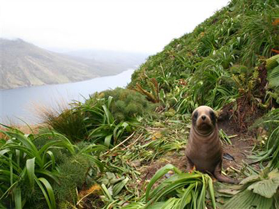
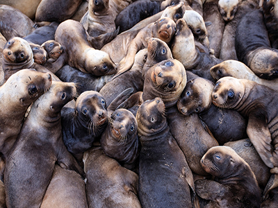
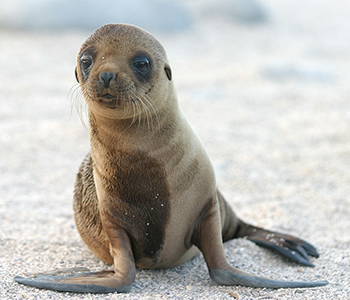
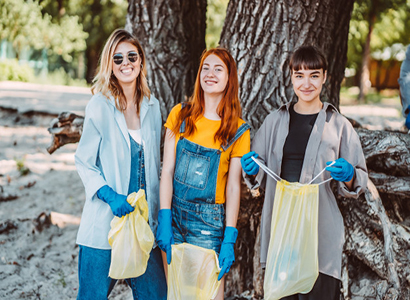

NZ Sea lion trust
Formed in 2003 The New Zealand Sea Lion Trust is a non profit organisation based in Dunedin with a specific focus on the conservation of NZ sea lions.
With your support we can try save New Zealand sea lions. The worlds rarest sea lion species.
Get involved
Our mission
To promote the protection and conservation of the endangered New Zealand Sea Lion through research and public education.
Who we are
We are staffed and supported entirely by volunteers and self funded by donations from generous members and donors.

Threats
NZ Sea Lions are endangered and a ‘nationally critical’ species, the highest threat category in New Zealand.
Competition for food, accidental drowning in trawl fisheries, disease and human disturbance are our biggest threats.
Our work
The NZ Sea Lion Trust and The Department of Conservation work closely together to conserve the NZ Sea Lions by monitoring females and pups, running community activities, delivering education programmes and supporting scientific research.
Our research and monitoring efforts are focused on the Otago and Catlins Coast at this stage.

Sea lions
Despite being fully protected under the Wildlife Act and Marine Mammal Protection Act, NZ sea lions are sometimes harassed and killed deliberately, with several such incidents in Otago and Southland in recent years.
Let DOC know if you're concerned about the safety of a sea lion, or to report inappropriate behaviour around them. Enjoy these impressive animals.
Get in touch
We would love to hear from you!
NZ Sea Lion Trust PO Box 6012 Dunedin 9059 New Zealand
0800 456 781
Donate
Donations small or large are gratefully received and help support the protection of the NZ Sea Lion. Funds raised will be used to buy essential equipment, such as scanners, for the use of our volunteers in monitoring the movements of the individual sea lions.
Volunteer with us
Volunteering with us is a great way to learn new skills, get outdoors, meet new friends and share knowledge with the local community.Donations small or large are gratefully received and help support the protection of the NZ Sea Lion.
Attend events
View our Facebook page to see what’s coming up
